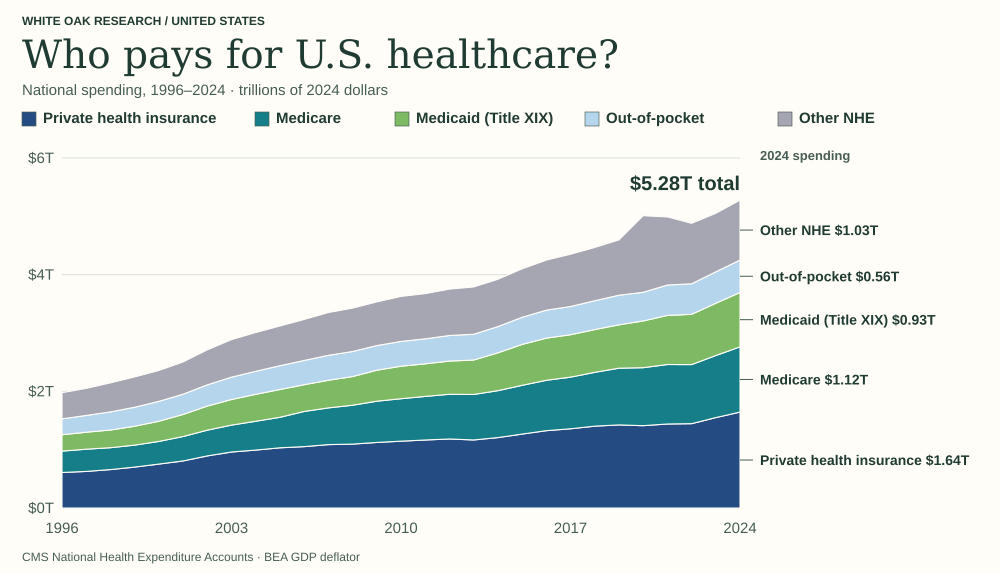
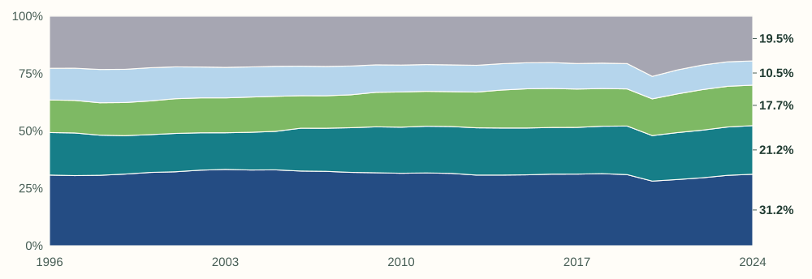
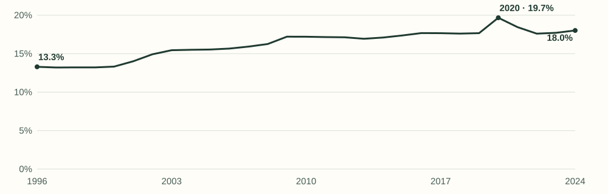

Analysis 03 · U.S. health spending
Who pays for American healthcare?
The U.S. spent $5.28 trillion on healthcare in 2024, up from $1.98 trillion in 1996 after adjusting for economy-wide inflation. Private health insurance remained the largest single source of funds. Medicare and Medicaid together accounted for nearly two in every five dollars.
1996–2024 · Annual national health expenditures

Medicare and Medicaid gained share
The two programs together rose from 32.7% in 1996 to 38.8% in 2024. Private health insurance accounted for about 31% at both endpoints, with a dip to 28.2% in 2020. Out-of-pocket spending fell from 13.8% to 10.5% of the total even as it roughly doubled in inflation-adjusted dollars, from $273 billion to $557 billion. A smaller share can still mean more spending when the total grows.
- Private health insurance
- Medicare
- Medicaid (Title XIX)
- Out-of-pocket
- Other NHE

Healthcare reached 18% of the economy
National health expenditures rose from 13.3% of GDP in 1996 to 18.0% in 2024. The ratio peaked at 19.7% in 2020 and fell to 17.6% by 2022. The ratio can move when healthcare spending changes, when GDP changes, or both.

The 2024 breakdown
| Source | Spending | Share |
|---|---|---|
| Private health insurance | $1,644.6B | 31.2% |
| Medicare | $1,118.0B | 21.2% |
| Medicaid (Title XIX) | $931.7B | 17.7% |
| Out-of-pocket | $556.6B | 10.5% |
| Other NHE | $1,027.8B | 19.5% |
| Total | $5,278.6B | 100% |
Amounts and shares are independently rounded.
What the categories measure
CMS tracks the source of funds for health expenditures, such as a public program, a private insurer, or a direct patient payment. CMS publishes a separate sponsor account to estimate how much households, employers, and governments ultimately finance. These charts use the source-of-funds account throughout.
The dollar chart uses the BEA GDP price deflator, so “2024 dollars” reflect economy-wide purchasing power. The trends combine changes in prices specific to healthcare, use, and the mix of services. Read the methods and definitions.